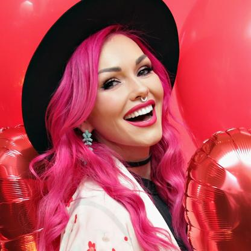

Kandee Johnson
.

Acerca De
Artista de maquillaje para televisión y cine que ha creado un canal de YouTube para producir videos que la muestran siendo transformada en personajes y celebridades como Blancanieves, Miley Cyrus, Kim Kardashian, Willie Robertson y El joven manos de tijeras a través del maquillaje.
Antes de la Fama
Se graduó de la escuela de belleza pero se dio cuenta de que odiaba hacer peinados. Quería concentrarse únicamente en el maquillaje. Pronto consiguió su primer trabajo como maquilladora en el programa I Love the 80's de VH1.
Curiosidades
En el 2016 ganó un Premio Streamy en la categoría de belleza. Fue jurado invitada en el programa How Do I Look y ha participado en Elle, Glamour, AOL, Yahoo y en una serie de videos para la revista Glamour.
Vida de Familia
Nació en California y creció junto a una hermana menor llamada Tiffany. Tiene cuatro hijos llamados Ellie, Alani, Blake y Jordan. Comenzó a salir con el cantante Michael Castro en el 2015.
Asociación
Maquilló a Conan O'Brien, entre otras varias celebridades.
Regresar